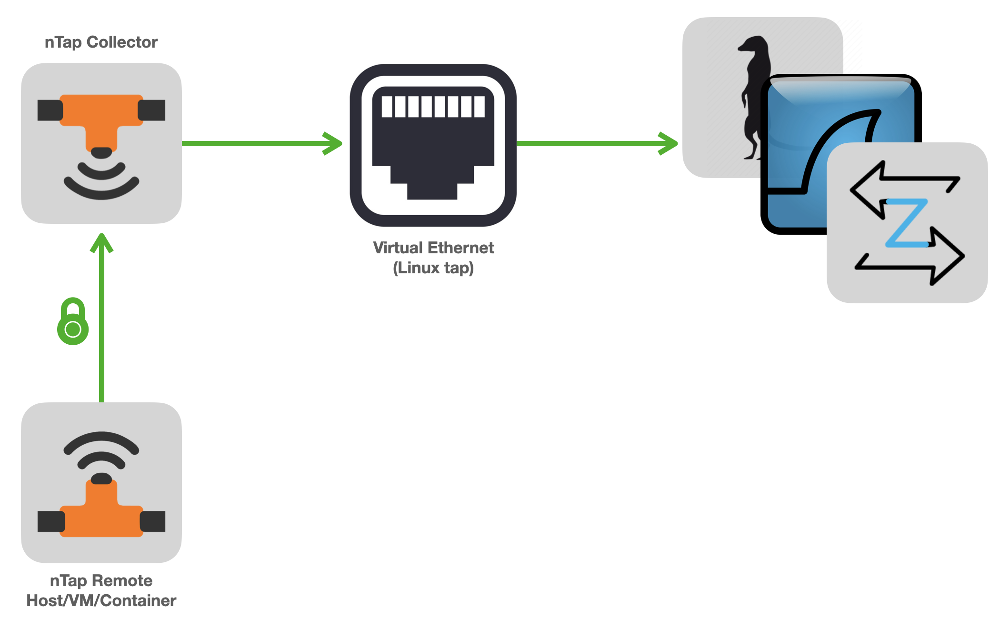
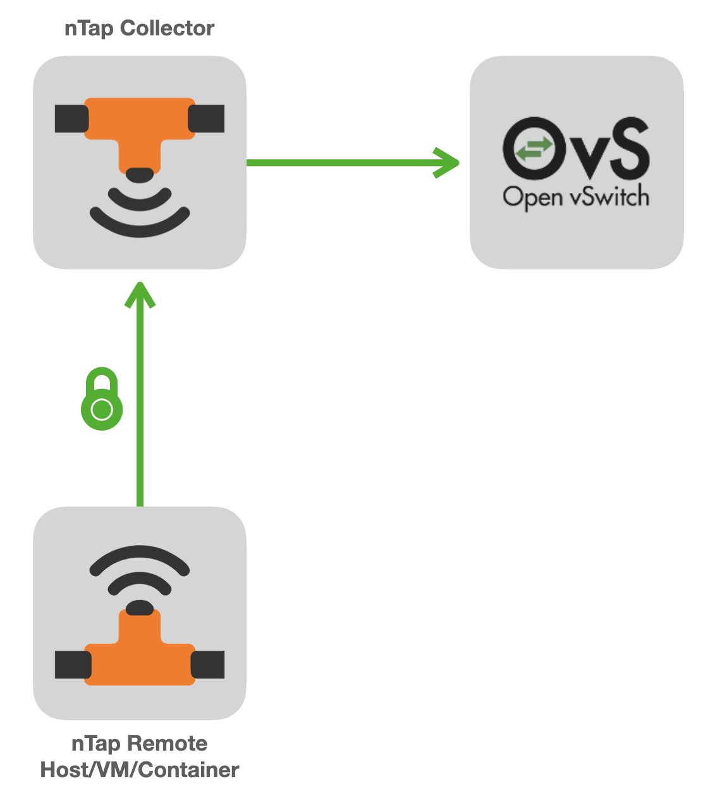

Введение
nTap — это программное обеспечение Сетевой кран который можно использовать для предоставления доступа к сетевому трафику из удаленного места.
nTap можно использовать в различных сценариях, включая:
кибербезопасность: когда трафик необходимо проверять в целях безопасности.
видимость: когда нам нужно выяснить, что происходит в сети.
устранение неполадок: когда что-то работает не так, как ожидалось, и нам нужно перейти к уровню пакетов.
Архитектура
nTap концептуально разделен на два отдельных компонента: nTap коллектор и nTap удаленный.
Удаленный nTap запускается на хосте, где необходимо перехватить трафик, и отправляет захваченный трафик на сборщик nTap, используя сквозное шифрование.
Коллектор nTap получает трафик от удаленных кранов и:
создает локальный виртуальный интерфейс Ethernet, в который вводится декапсулированный трафик.


(опционально) отправляет собранный трафик на Открыть vSwitch (универсальный переключатель многопользовательской игры), инкапсулированный в VXLAN.


если вы планируете использовать nTap с приложениями ntop, вы можете напрямую отправлять трафик с удаленных отводов в приложения ntop без необходимости использования приложения-сборщика.

Контейнеры и виртуальные машины
nTap можно использовать внутри контейнеров и виртуальных машин. Обычно компонент Tap развертывается на удаленных хостах/контейнерах, IP-адрес которых может быть динамическим. Вместо этого приложение-сборщик должно быть активным на хосте со статическим IP-адресом, поскольку ему необходимо получать пакеты, отправленные с помощью перехватчика. На хосте, где работает приложение Tap, не требуется устанавливать лицензию.
Пакеты против потоков
Зачем мне играть с пакетами, если я могу контролировать свою сеть с помощью потоков?
Поток — это, по сути, метод «сжатия» метаданных о пакетах с одним и тем же 5-кортежом (IP-источник/dst, порт-источник/dst, протокол) и создания короткой записи (называемой потоком), содержащей сводную информацию об этом обмене данными. Степень сжатия потока очень высока, поскольку в одном потоке можно передать несколько тысяч пакетов. Хитрость заключается в том, чтобы настроить nProbe для выдачи всех информационных элементов, необходимых для выполнения заданной задачи: это происходит потому, что в потоке вы теряете такие вещи, как, например, синхронизация пакетов.
В некоторых случаях, например при устранении неполадок в сети, вам может потребоваться доступ к необработанным пакетам, поскольку информация о потоке имеет слишком высокий уровень. Другими случаями, когда вам нужны необработанные пакеты, являются случаи, когда у вас есть приложение, которое вы не можете снабжать такими потоками, как Wireshark, Suricata или Zeek. Это два типичных случая использования, когда пакеты являются обязательными, а потоки невозможны.
Суммируя:
потоки необходимо использовать всякий раз, когда ваше приложение мониторинга/безопасности может с ними работать. Это связано с тем, что с помощью потоков вам нужно переместить очень мало информации с отслеживаемого сайта на сторону сборщика по сравнению с пакетами. В этом случае рассмотрите возможность использования nProbe.
пакеты необходимо использовать всякий раз, когда вам нужен доступ к необработанной сетевой информации, а потоки нельзя использовать как слишком высокоуровневые. В этом случае вы должны быть готовы к удаленной отправке большого количества трафика (т. е. если вы контролируете хост, подключенный к сети 100 Mbit, ответвитель потенциально может передать 2 x 100 Mbit, RX+TX, трафика), но если это единственный жизнеспособный вариант, nTap — это то, что вам нужно.
Безопасность и производительность
В отличие от многих других коммерческих приложений виртуального отвода, nTap доставляет пакеты по зашифрованному каналу через UDP. Связь всегда однонаправленная от ответвителя к коллектору/ntopng/nProbe без связи по обратному каналу: это ключевое требование для работы nTap в сети с высоким уровнем безопасности, которая не допускает обратный канал (обратите внимание, что соединение TCP является двунаправленным, поскольку некоторые пакеты, такие как ACK, необходимо отправлять обратно).
Сквозное шифрование использует уровень развития симметричное шифрование, которое использует преимущества (если доступно) AVX-инструкции для максимальной производительности. nTap добавляет микроуровень в дополнение к исходному пакету, где размещаются некоторые метаданные (например, время и длина захвата пакета), тогда как шифрование не увеличивает исходный размер передаваемого пакета.
Дополнительную информацию о производительности см. раздел определения конфигурации оборудования <sizing.html>.